MT 04¶
ELECTRÓNICA Y PROGRAMACIÓN (ARDUINO IDE) . INTRODUCCIÓN¶
TECNOLOGÍA Y FABRICACIÓN

HERRAMIENTAS PRÁCTICAS APLICADAS . MT04¶
Este Módulo Técnico 4 pone en práctica la tecnología de fabricación digital electrónica a través de programación ARDUINO IDE. Electrónica, un universo nuevo se abre para mí, un nuevo desafío para moverme de la zona de confort. Allá vamos…
ARDUINO PROJECTS ~ TUTORIALS . TINKERCAD¶
El punto de partida de mi proceso de aprendizaje comenzó principalmente desde la PRÁCTICA VIRTUAL, (plataforma virtual Tinkercad), desde de tutoriales útiles, SIMULADORES centrados en ensayos de Circuitos Electrónicos Arduino, para comprender desde ahí, la teoría. Esos conceptos básicos que dan sentido a la Electrónica y su alcance a través del lenguaje de programación code. Simultáneamente la práctica se potenció bastante a partir de material teórico afín a la temática complementaria (meets + literatura). + info [ArduinoBook] & + info [Circuits/ArduinoProject/tutorials]
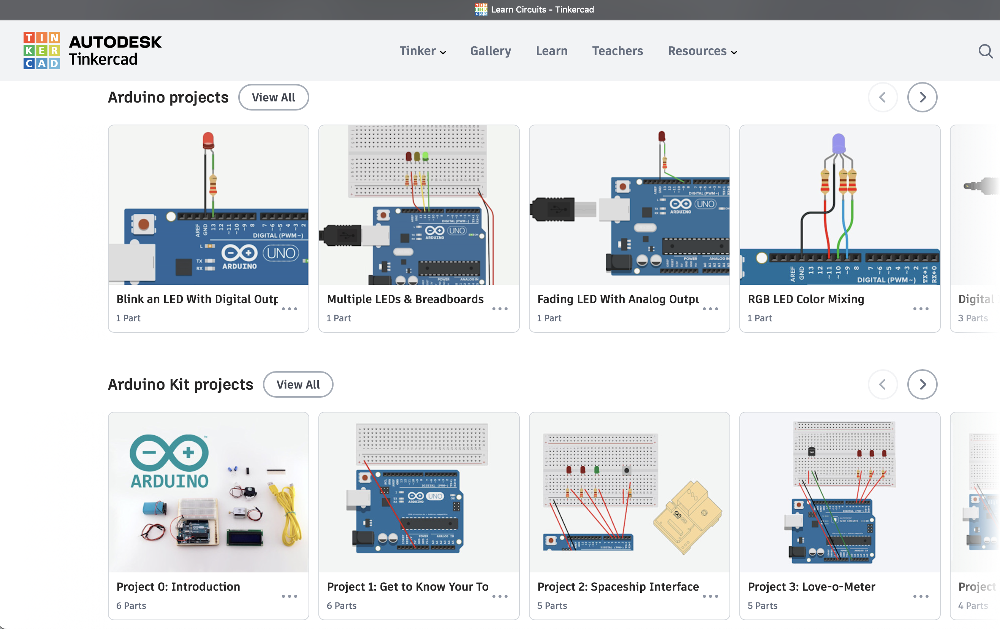
TUTORIAL 1 . ARDUINO PROJECTS ~ TINKERCAD¶
BLINK AN LED WITH DIGITAL OUTPUT ~ [ TUTORIAL 1 ] OBJETIVO . ❝ Aprendamos a parpadear un LED (diodo emisor de luz) usando la salida digital de Arduino. Si eres nuevo en Arduino, este es un gran lugar para empezar. Conectaremos un LED al Arduino Uno y compondremos un programa sencillo para encender y apagar el LED. ❞
 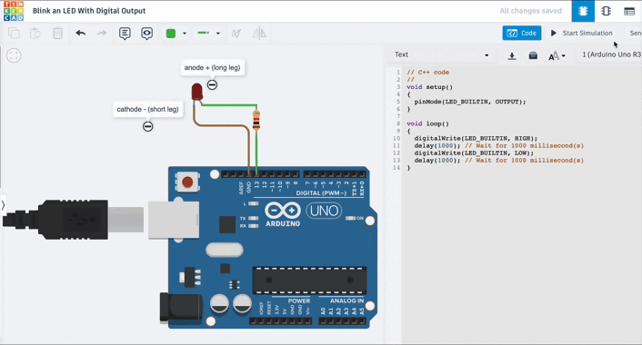
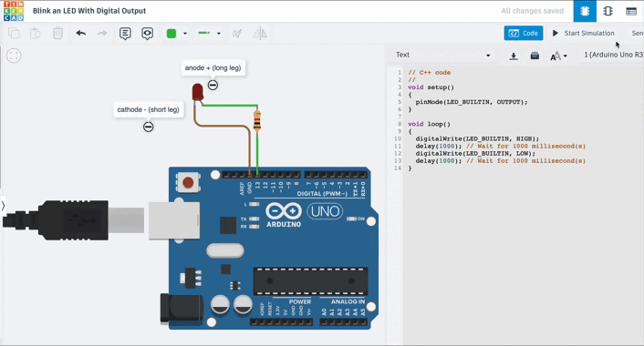
Durante el recorrido práctico tutorial fue útil integrar en la interfase de edición de código, el sistema de guía “Simple code with Blocks” & “Blink arduino block Explain”; Visualizar combinadamente el editor de código de programación en formatos [ bloque & texto ] me sirvió como ’traductor’ del lenguaje de código lineal, para comprender con mayor facilidad la programación electrónica en cuanto a estructura y elementos de configuración [ void setup() {}, void loop() {} … ] del lenguaje de código de la secuencia de acciones aplicadas al dispositivo electrónico de circuito Arduino Uno R3. + info [Electronic/Circuits/ArduinoProject/1]

TUTORIAL 2 . ARDUINO PROJECTS ~ TINKERCAD¶
MULTIPLE LEDS & BREADBOARDS ~ [ TUTORIAL 2 ] OBJETIVO . ❝ Aprendamos a controlar múltiples LED usando las salidas digitales de Arduino y una placa de pruebas. Conectaremos algunos LED al Arduino Uno y compondremos un programa simple para iluminarlos en un patrón. Explore el circuito de muestra aquí en el plano de trabajo y construya el suyo propio a lo largo de él. Para construir opcionalmente el circuito físico, reúna su placa Arduino Uno, cable USB, placa de pruebas sin soldadura, algunos LED, resistencias (cualquier valor de 100-1K ohmios será útil) y cables de placa de pruebas. ❞
‘Jugando’ con el simulador y la variedad de resistencias y sus valores (Ω Ohms) posibles para entender su funcionamiento, verifiqué la relación adecuada entre resistencias y el power (𝓥olts) de alimentación y voltajes de la placa arduino. Lo solucioné aumentando el valor de la resistencia adecuada al voltaje de entrada.


REMIX TUTORIALS . ARDUINO PROJECTS ~ TINKERCAD¶
A través de los referencias de los Circuit Design / Getting Started with MakerBot pude ir (de menos a más), observando los circuitos (REMIXES 1,2, 3, 4) preexistentes ya construidos y comparar el lenguaje de código configurado con la interfaz visual del circuito activo en funcionamiento y comprender mejor las lógicas, de programación electrónica: significado del lenguaje de código vs la conexión entre componentes (estructuras, geometrías, orientaciones, sentidos y rutas de flujo energético, etc), y las resultantes de las dinámicas de movimientos.

 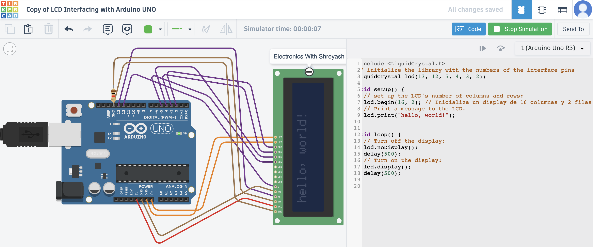
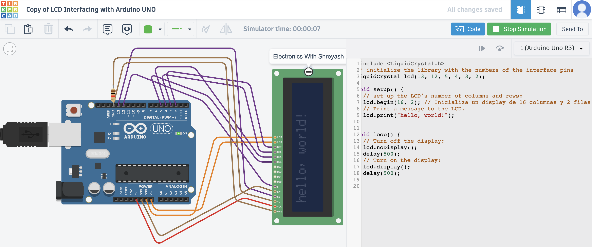
+info [ REMIX 1 ] ~ [ REMIX 2 ] ~ [ REMIX 3 ] ~ [ REMIX 4 ]
ARDUINO ~ LATU¶
DINÁMICA 1 . PRÁCTICA ARDUINO ~ LATU¶
La práctica presencial constó de una sesión extensa en las instalaciones del LATU, a través de una dinámica a cargo de Mathías Rodríguez y un intercambio grupal entre docentes y estudiantes. Se desarrolló en 5 etapas / 5 premisas: desafíos electrónicos arduinos con distintos objetivos circuitales e instrucciones para la movilidad energética. + info [ PrácticaArduino~Latu ]
Una vez instalado el Arduino IDE software (MacOS AppleSilicon), incluimos en el Board Package (Installing) (o paquete de plataforma/placas), microcontrolador Arduino AVR Boards ~ (Arduino UNO), (con un ‘Single-Core’ núcleo físico, integrado al cerebro completo), añade funcionalidad (por medio de un conjunto de archivos de software) y permite que el entorno de desarrollo sea compatible con una familia específica de microcontroladores. Este paquete de placas son necesarios para que el Editor Arduino IDE entienda cómo traducir el código al lenguaje específico del microprocesador. menú: [BOARDS MANAGER (PACKAGE) → Arduino AVR Boards
__
1 . LED ~ BUTTON . Arduino sketch 1¶
Armamos primero el Circuito Arduino #1 y segundo lo vinculamos en conexión USB con la PC/Software al
[EDITOR Arduino IDE + MonitorSerie-integrado], configurando allí su respectivo código de programación en correspondencia con las conexiones físicas establecidas. Si ambos, [circuito físico + código programación digital] se corresponden, el circuito se activa encendiéndose, de lo contrario, no. Una vez sincronizados y funcionales, salvamos [Upload Code "→"] el código programado.
OBJETIVO . ❝ Programar el Arduino para que lea un botón y encienda un LED únicamente mientras el botón está presionado. Cuando el botón se suelta, el LED debe apagarse.❞
CONEXIONES . #1
1) BOTÓN: Un pin del botón → Pin 2 del Arduino + El otro pin del botón → GND
2) LED: Ánodo (pata larga) → Pin 13 del Arduino + resistencia + Cátodo (pata corta) → GND

CÓDIGO . #1
En la generación del código hay que tener en cuenta cada detalle expresado en las líneas de texto; El lenguaje de código es sensible y literal sobre la edición de texto, frente a cualquier variante, suma o resta de carácteres, espacios, interlineados, etc. El armado electrónico exige exactitud total, un código preciso garantiza un circuito funcional y viceversa.
A continuación se ilustran ciertos errores ocurridos en la configuración digital en línea de código ingresada/editada en ArduinoIDE [Verify Code > "✓”] hasta lograr su resolución final y compatibilidad de conexión con el circuito analógico Arduino.
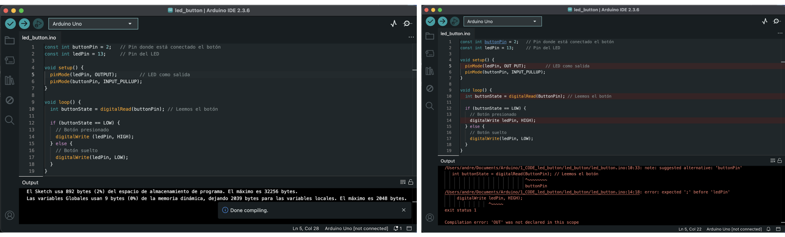 +info [ SoluciónTinkercad~1BOTONPULLUP ] / [ SoluciónTinkercad~2BOTTONPULLUP ]
 🎬 LINK DEMO ~ CIRCUITO 1_LATU_MT04
🎬 LINK DEMO ~ CIRCUITO 1_LATU_MT04
__
2 . LED ~ POTENTIOMETER . Arduino sketch 2¶
OBJETIVO ❝ Programar el Arduino para que lea el valor de un potenciómetro y controle el brillo de un LED. Cuando el potenciómetro esté en valores bajos, el LED debe estar tenue; cuando el potenciómetro esté en valores altos, el LED debe brillar más fuerte. El cambio debe ser progresivo: a mayor giro del potenciómetro → mayor brillo.❞
CONEXIONES . #2
POTENCIÓMETRO: Pin del medio → A0 (entrada analógica del Arduino) + Un pin lateral → 5V + Otro pin lateral → GND
LED: Ánodo (pata larga) → Pin 9 del Arduino + Cátodo (pata corta) → GND
El pin 9 es PWM, necesario para controlar el brillo del LED.

CÓDIGO . #2

__
3 . LED ~ POTENTIOMETER . Arduino sketch 3¶
OBJETIVO ❝ Programar el Arduino para que use el sensor de distancia SRF05 y encienda un LED cuando un objeto esté a menos de 20 cm. Si el objeto está más lejos, el LED debe permanecer apagado. Además, el programa debe mostrar en el Monitor Serie (del Editor ArduinoIDE) la distancia medida en centímetros.❞
CONEXIONES . #3
SRF05: VCC → 5V + GND → GND + TRIG → pin 9 + ECHO → pin 8
LED: Ánodo (pata larga) → Pin 13 + resistencia + Cátodo (pata corta) → GND
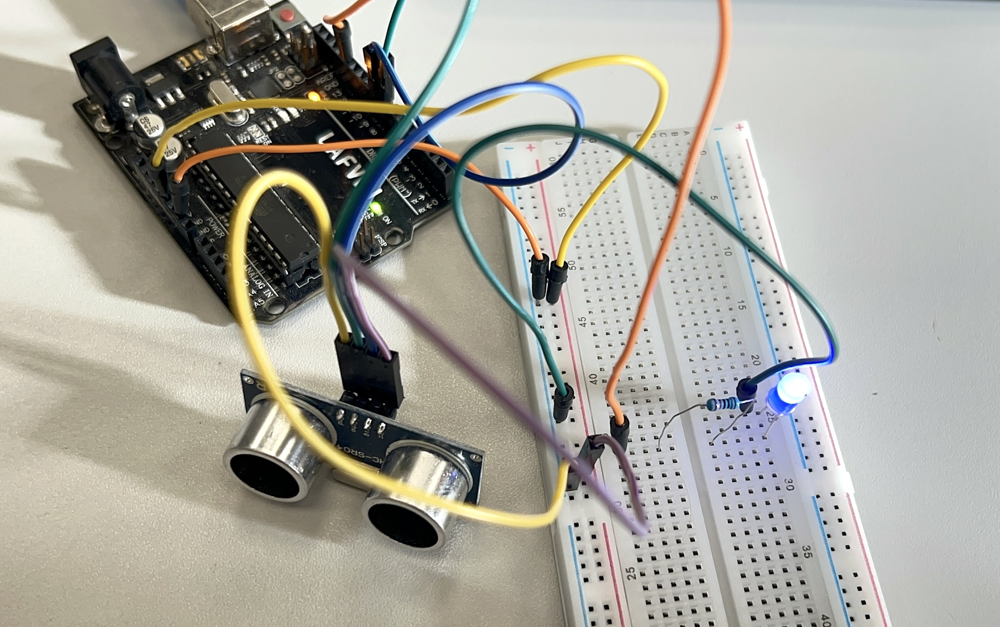
CÓDIGO . #3 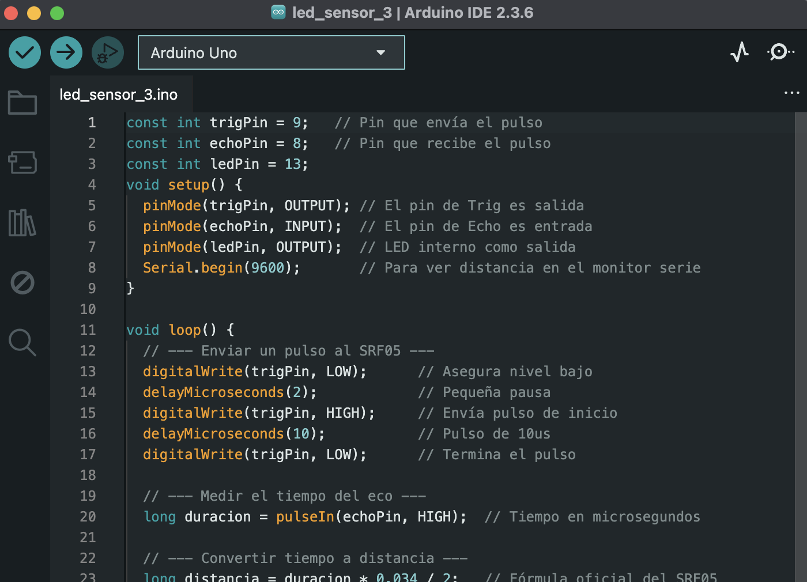 +info SoluciónTinkercad~SRF05ultrasonic
 🎬 [ LINK DEMO ~ CIRCUITO 3_LATU_MT04 ]
🎬 [ LINK DEMO ~ CIRCUITO 3_LATU_MT04 ]
__
4 . LED ~ DISTANCE SENSOR . Arduino sketch 4¶
OBJETIVO . ❝ Programar el Arduino para que lea un potenciómetro y controle el ángulo de un servo SG90 en tiempo real. Mientras el servo esté moviéndose (cambiando de ángulo), debe encenderse un LED rojo. Cuando el servo esté quieto (el ángulo no cambió respecto a la lectura anterior), debe encenderse un_ LED verde.❞
CONEXIONES . #4
POTENCIÓMETRO: Patita izquierda → GND + Patita derecha → 5V + Patita central → A0
SERVO SG90: Cable marrón/negro → GND + Cable rojo → 5V + Cable naranja → Pin 9 (PWM)
LED rojo (servo moviéndose): Ánodo (+) → Pin 12 + resistencia + Cátodo (–) → GND
LED verde (servo quieto): Ánodo (+) → Pin 13 + resistencia + Cátodo (–) → GND
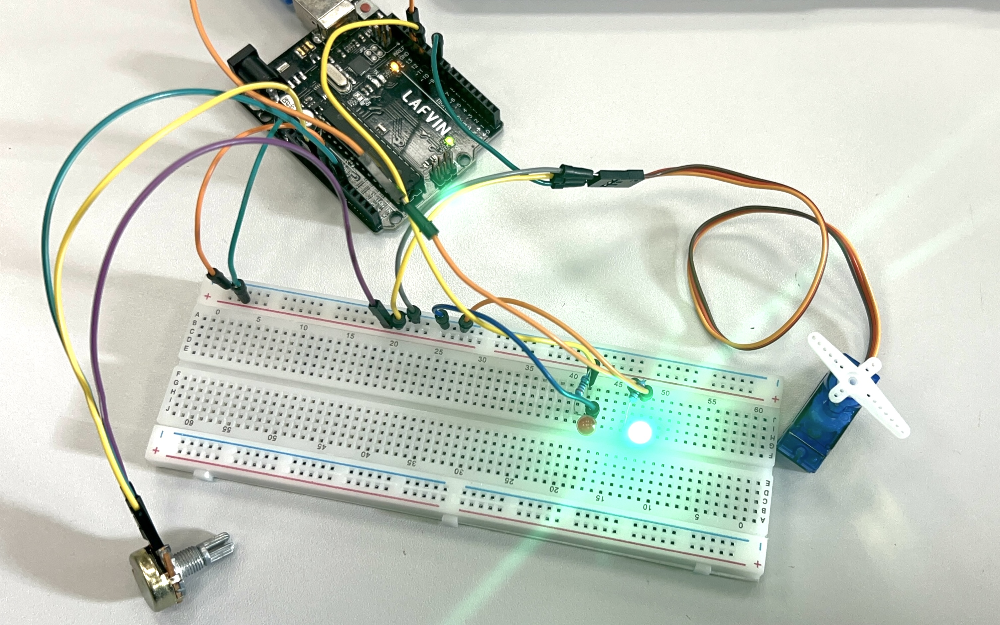
CÓDIGO . #4
 +info [ SoluciónTinkercad~SERVO ]
+info [ SoluciónTinkercad~SERVO ]
 🎬 LINK DEMO ~ CIRCUITO 4_LATU_MT04
🎬 LINK DEMO ~ CIRCUITO 4_LATU_MT04
__
5 . LED ~ DISTANCE SENSOR . Arduino sketch 5¶
OBJETIVO ❝ Programar el Arduino para que lea una fotoresistencia conectada a un pin analógico. Si la luz ambiente es alta, debe encenderse un LED. Si la luz es baja, debe encenderse otro LED diferente. Solo uno de los dos LEDs debe estar encendido a la vez. Además, el valor leído debe mostrarse en el [ Monitor Serie ].❞
CONEXIONES . #5
FOTORESISTENCIA: Un extremo → 5V + El otro extremo → Nodo central del divisor (va al pin A0)
RESISTENCIA FIJA (10 KΩ): Un extremo → Nodo central del divisor (misma fila que la pierna 2 de la LDR) + Otro extremo → GND
LED DE LUZ FUERTE (LED1: Ánodo (pata larga) → Pin 8 + resistencia + Cátodo (pata corta) → GND
LED DE LUZ BAJA (LED2): Ánodo → pin 9 + resistencia + Cátodo → GND
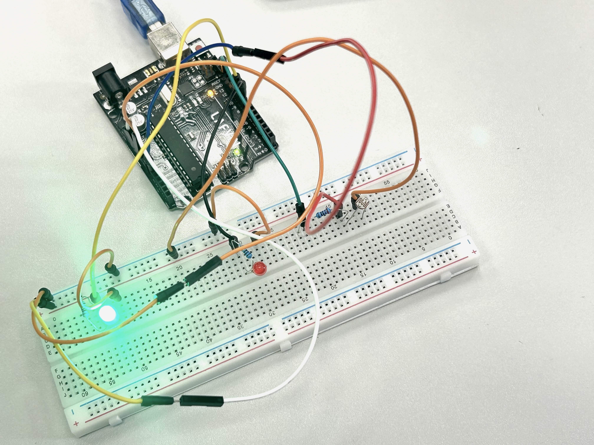
CÓDIGO . #5
 +info [ SoluciónTinkercad~SENSOR-LDR ]
+info [ SoluciónTinkercad~SENSOR-LDR ]
 🎬 LINK DEMO ~ CIRCUITO 5_LATU_MT04
🎬 LINK DEMO ~ CIRCUITO 5_LATU_MT04
ARDUINO ~ VIRTUAL¶
DINÁMICA 2¶
PRÁCTICA ARDUINO ~ T.FINAL
Realicé esta dinámica como una práctica extra complementaria a la práctica presencial Latu de circuitos físicos. El OBJETIVO electrónico constó del siguiente enunciado: Tarea 1 – Puerta Automática Sensible a la Luz
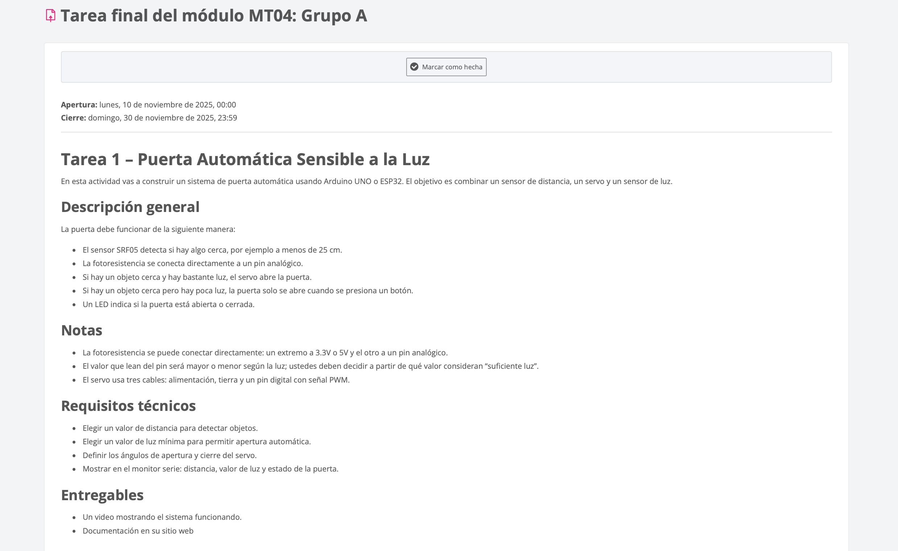
CONEXIONES . TAREA FINAL
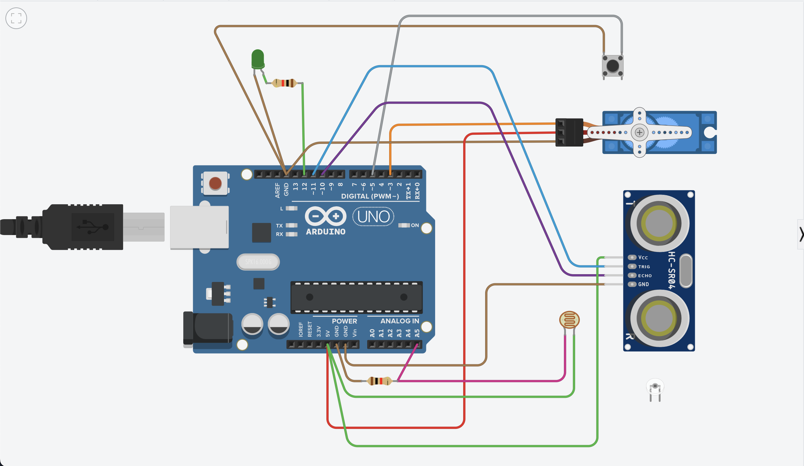
CÓDIGO . TAREA FINAL
Fui armando el Circuito Arduino MT04_T1 en el simulador virtual Tinkercad, en simultáneo con la generación/edición del código respectivo. Ese proceso en simultáneo fue muy útil, porque a través de la comparativa de configuración entre relación de componentes y código programación, comprendí un tanto más el sistema lógico electrónico.
Avancé poco a poco, intentando (e intentando), solucionar obstáculos durante el proceso de edición del código. Enfrentarse al lenguaje de programación/código es un desafío al tratarse de una disciplina ajena a mi formación. La complejidad está dada por la interpretación conceptual sobre los “errores a modificar” que indica corregir el serial monitor, a medida que construimos la programación digital del circuito.

Durante el proceso, con la ayuda de AI, logré modificar errores de código, por ejemplo, el señalado en el bloqueo de simulación de encendido del circuito en Tinkercad. Si bien el código general del circuito ahora era correcto, al activar la simulación de funcionamiento del sistema Circuital, el sensor de luz fotosensible al moverlo no encendía el LedPuerta; por lo tanto se deduce que faltaba una instrucción no indicada/expresada en la programación del código. Con la ayuda de la AI nuevamente, busqué identificar el error de funcionamiento (promt): “¿Podrías indicarme por qué no se enciende el sensor de luz para este circuito tinkercad? ”; A partir de la solución propuesta por la AI sumé un concepto más a la expresión de programación de código — Lógica Combinada — entre las variables [valorsensor > umbralLuz || distancia < umbralDistancia] aplicada a las funciones/instrucciones control del LED vs activación del sensor de luz (fotorresistencia).
Solución AI propuesta: ❝ Para que ambos sensores puedan controlar la “puerta automática”, necesitas combinar la lógica utilizando un solo conjunto de condiciones if o else if. Decide cuándo se debe abrir la puerta (encender el LED): (se abre si se cumplen Ambas condiciones), ¿Se abre si alguien se acerca o si hay mucha luz?. . .❞
A continuación se presenta el código modificado que combina las condiciones para que el LED se encienda si se detecta proximidad o si hay mucha luz.

La activación del Servo no fue sencilla. LedPuerta se encendía pero el Servo conectado no se movía; faltaba incluir en el código: Al servo como componente del circuito y (incluir librería) expresar sus respectivas instrucciones en la programación del código. Logré activar el Servo finalmente luego de mucho intentar, la edición del código vs la observación del la línea de código correspondiente al ejercicio #4 .
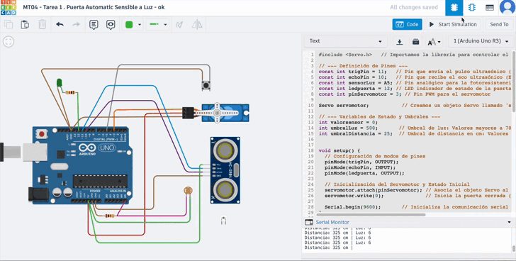 🎬 LINK DEMO ~ CIRCUITO MT04_T1 Tinkercad
Como revisión final del código programado para la función deseada del circuito móvil consulté a la IA identificar aquellas fallas (6 ERRORES encontrados) en las líneas de código que provocaron fallos en la movilidad del sistema sincronizado. Seguramente esta práctica virtual requiere una revisión experta para su mejora y óptimo funcionamiento integral.
MARCO TEÓRICO / GLOSARIO . MT04¶

Paralelamente a las prácticas, exploré también dos referencias teórico/prácticas muy útiles: ArduinoBook y Directorio Docs.Arduino, para profundizar en la lógica y comprensión electrónica y observar comparativamente distintos casos o tipologías de circuitos, sus componentes, y sus correspondientes CÓDIGOS y ESQUEMAS, y significado circuital de programación.
ARDUINO BOOK¶
Entre otros, algunos de los contenidos consultados ejs.: “Medidor de enamoramiento”: Conceptos y Componentes electrónicos + Esquemas/símbolos circuitales + herramientas Hardware/Software + A/Z Glosario + Indicador del estado de ánimo + “Medidor de enamoramiento”… +info [ ArduinoBook ]
ARDUINO DOCS¶
Ruta de consulta útil para una mirada y comprensión de lo macro a lo micro: Home / Programming / Built-in Examples. +info [ Directorio Docs.Arduino ]
SOFTWARE¶
Electronic programming ~ Simulators & Physics
TINKERCAD https://www.tinkercad.com/learn/circuits/collection/arduino
WOKWI https://wokwi.com/
ARDUINO IDE 2.36 ~ (macOS apple Silicon) https://www.arduino.cc/en/software/
LINKS DE INTERÉS . MT04¶
TINKERCAD TUTORIALS ~ Circuit Arduino Project https://www.tinkercad.com/learn/circuits/collection/arduino
MORSE CODE https://en.wikipedia.org/wiki/Morse_code
ARDUINO BOOK PROJECT https://candy-ho.com/Drivers/librodeproyectosdearduinostarterkit-151212174250.pdf
ARDUINO IDE ~ ALL DOCS https://docs.arduino.cc/
ARDUINO IDE (DOCS) ~ LANGUAGE REF https://docs.arduino.cc/language-reference/
ARDUINO IDE (DOCS) ~ INSTALLING BOARD PACKAGE https://docs.arduino.cc/software/ide-v2/tutorials/ide-v2-board-manager/
ARDUINO IDE (DOCS) ~ INSTALLING LIBRARIES https://docs.arduino.cc/software/ide-v1/tutorials/installing-libraries/
GUÍA ELECTRÓNICA INET ~ RESISTENCIAS https://www.inet.edu.ar/wp-content/uploads/2020/07/ELECTRONICA_Gu--a01-Resistencias.pdf
Descargables de los esquemas de circuitos + software para dibujar circuitos electrónicos https://fritzing.org/ https://www.tinkercad.com/dashboard
ELECTRÓNICA PROYECTOS MAKER https://www.instructables.com/ https://www.hackster.io/
ELECTRÓNICA venta e ideas https://www.adafruit.com/
ESCULTURAS ELECTRÓNICAS https://bhoite.com/sculptures/
REFLEXIONES . MT04¶
❝¶
Déjà-vu! forzando nuevamente la zona de confort del aprendizaje…Nuevos lenguajes implican nuevos desafíos! Este módulo tuvo principalmente ese espíritu, una nueva oportunidad para ampliar la neuroplasticidad jaja y sortear la dificultad de ni saber como arrancar a aprender. Me salvan las ganas de aprender, la curiosidad, lo estimulante que me resulta tener un desafío en frente, no lo puedo evitar, ¡así soy!, jajja.
Entre los conceptos de electrónica/Robótica leídos me sedujo esta idea; ❝ Los servomotores son los músculos de los robots, proporcionando un encendido y apagado suave y un posicionamiento preciso. Ya sea en un brazo robótico en una línea de montaje o en un robot explorador en Marte, los servomotores hacen posible el movimiento.❞ , idea de -movimiento- que integro como una metáfora transferible a este proceso de aprendizaje, reflexiono sobre lo clave de esos “músculos interiores”, activos, dinámicos, que en el “andar” (valga la redundancia) de esta ‘experiencia electrónica’ me permitieron dejar de lado la frustración y avanzar.
A pesar de la dificultad por ingresar a un universo nuevo del conocimiento, el concepto madre que hay detrás de la electrónica, los electrones y la energía para mover algo… una analogía con lo que le sucede al ser humano al moverse físicamente, sus neuronas, sus pensamientos se activan al ponerse en movimiento mucho más que cuando pensamos en una “corporalidad sedentaria”, caminando, duchandonos, lavándose los dientes, etc etc,,, la actividad corporal de los electrones humanos desencadena el pensamiento activo, “ese momento desatanudos” donde las ideas ocurren mentalmente y fluyen en nuestro cerebro, como si se activara un circuito electrónico.
Al leer esto me sentí identificada; ❝ Todo el mundo, todos los días, usa la tecnología. La mayoría de nosotros dejamos la programación a los ingenieros porque pensamos que la codificación y la electrónica son complicadas y difíciles; pero en realidad pueden ser actividades divertidas y emocionantes. Gracias a Arduino, diseñadores, artistas, aficionados y estudiantes de todas las edades están aprendiendo a crear cosas que iluminen, muevan y respondan a personas, animales, plantas y el resto del mundo. ❞, antes lo sentía así 100%, y aunque (falta mucho por entrenarme), ahora no lo siento tan inalcanzable. ; )
❞¶